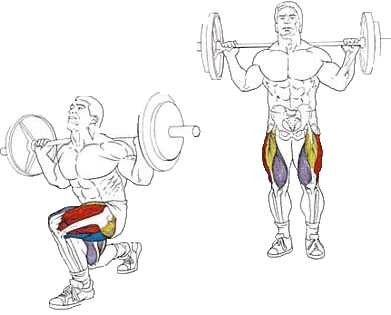

Это упражнение можно делать в разных вариантах: с гантелями, со штангой и в тренажере Смита.
Для всестороннего и гармоничного развития мышц эти варианты лучше чередовать от тренировки к тренировке.
Наибольший эффект упражнение дает после выполнения других базовых, например, приседаний.
Исходное положение:
Гриф располагается на трапециях либо задних частях дельт и трапеций
Ступни расположены параллельно чуть шире бедер.
Спина прямая, лопатки стянуты.
Техника выполнения:
Шагуть, чтобы нога, согнутая в колене, образовала прямой угол относительно пола.
Подняться максимально напрягая квадрицепс.
Рекомендации:
Колено не должно выходить за линию носка и «гулять», во избежание травм оно должно оставаться неподвижным.
Колено задней ноги должно находиться максимально близко к полу, но не касаться его.
При использовании гантелей руки расположены параллельно телу, во время выполнения упражнения они не двигаются.